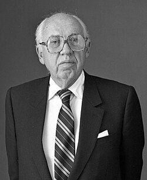

William Casey
CIA director, 1913 to 1987

A lawyer who headed the Office of Strategic Services' secret intelligence branch in Europe during World War II, chaired the Securities and Exchange Commission under Nixon, and was Director of Central Intelligence from January 1981 to January 1987. 1
The Iran-Contra independent counsel found evidence that he was a Cabinet-level advocate for the covert Contra resupply network and the arms sales to Iran, though no documentary evidence that he knew of the diversion of funds. He was widely reported to be a member of the Knights of Malta. 1,2,3
Open in the interactive Watcher
Related
- OSS OSS secret intelligence, Europe
- CIA CIA director, 1981 to 1987
- Order of Malta headquarters Knights of Malta
Sources
- William Casey Wikipedia
- Who Are the Knights of Malta — and What Do They Want? Foreign Policy, Jan. 19, 2011
- Their Will Be Done (Martin A. Lee) Mother Jones, July 1983